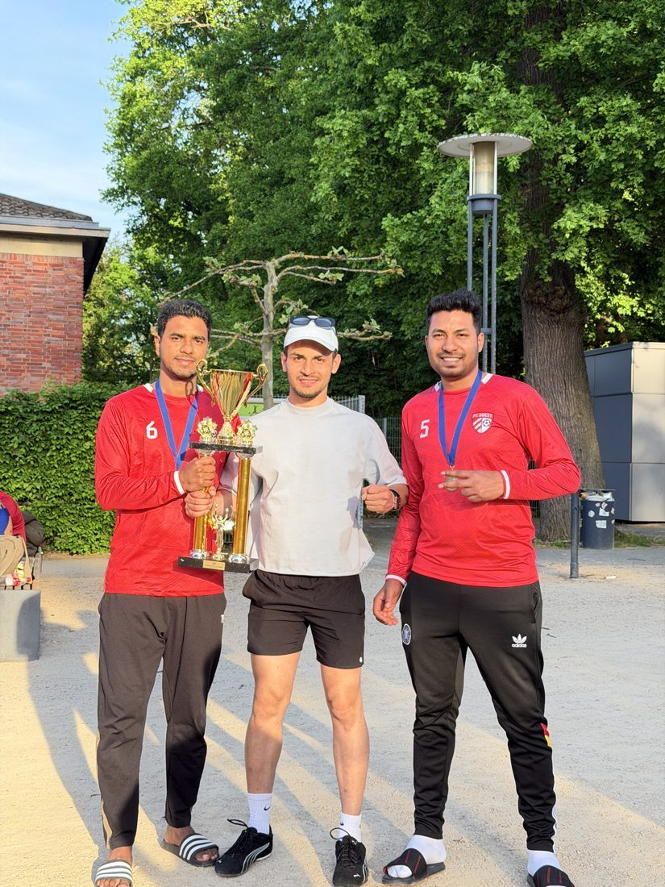
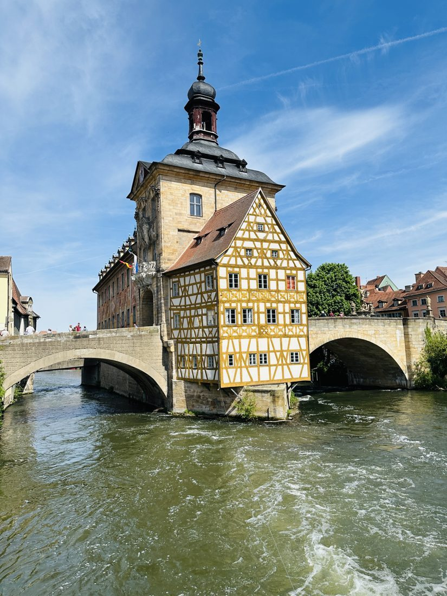

Working Student, Research Data Management · Paul-Drude-Institut
I run the institute's NOMAD Oasis, extend its plugin and contribute upstream to FAIRmat.
Data Scientist · Berlin
I make data useful.
I'm a data science master's student at BHT and a working student at the Paul-Drude-Institut. Most of what I build sits between a model and the person who has to use it: a research data platform for scientists, an LLM router that answers fast, and a recommender you can test for yourself.
Hi, I'm Ebna Sina. I grew up in Bangladesh, wrote ERP software in Dhaka, did machine learning research at university, and moved to Berlin to study data science.
I care about the whole play, from raw data to the person using the result. That can mean getting an LLM to answer faster, testing whether a recommender really works, or helping scientists find their own data.
Now Running research data infrastructure at PDI and reproducing LoRA from scratch for my Advanced ML course. Looking for a working-student role or thesis topic in ML / LLMs.
I run the institute's NOMAD Oasis, extend its plugin and contribute upstream to FAIRmat.
Berliner Hochschule für Technik. Recommender systems, deep learning, LLMs.
Computer vision research on real-time vehicle detection, which became the IEEE Access paper below.
Dashboards and business-data analysis across full-cycle ERP modules: production, sales, inventory, finance, SCM, HR & payroll. Promoted from junior in 2024.
CGPA 3.77/4.00 on a tuition scholarship. Captain of the CSE football team, vice president of the Computer Club, runner-up at two project shows.
Try it: who plays most like ?
Where each player touches the ball, attacking to the right.
Featured · MSc project · Recommender system
Finds footballers who play alike, based on what they actually did on the pitch. The heatmaps let you check its answer for yourself.
Data: StatsBomb Open Data.
LLM systems
System 1 routes, System 2 answers. A small decision model scores each task and sends it to the right specialist LLM on the GWDG supercomputer; only the hard cases go to a 675B model.
Work · PDI Berlin
I look after the institute's self-hosted NOMAD Oasis, where materials scientists store, search and share their research data.
Data analysis
Tesla and GameStop share prices next to scraped quarterly revenue. The point of the chart: GameStop's 2021 price spike happened while revenue was falling.
Earlier · UIU
An ML prototype that forecasts electrical load, and a handful of web apps, including a Spring Boot + Angular student management system. This is where I learned to build for real users.
Dhaka's roads carry everything from rickshaws to double-deckers. We built a system that detects and classifies them in real time, running on a small edge computer.
A Bi-LSTM model that answers follow-up questions about a passage in Bengali, with rationale-driven answers.
Python · PyTorch · scikit-learn · TensorFlow / Keras · Sentence-BERT · Optuna · Weights & Biases
llama.cpp · Hugging Face · LoRA · LLM routing & evaluation
pandas · NumPy · PySpark · SQL (PostgreSQL, MySQL, MS SQL) · MongoDB · web scraping
Docker · Nginx · Linux · GitHub Actions · Grafana · Prometheus
Streamlit · Plotly · Matplotlib · Seaborn · Tableau
Java · C/C++ · R · JavaScript · HTML/CSS · LaTeX



More photos, if you're curious
Champions in Darmstadt and runners-up at the Desh Elite Cup in Frankfurt, 2026. BFBC Football Excellence Award for my contribution to the team.
Berlin, Potsdam, Leipzig, Frankfurt, Darmstadt, Bamberg, Hannover, Paris, Brest and Barcelona, since moving to Germany.
Captain of the UIU CSE football team and vice president of the Computer Club.
1st runner-up at two UIU project shows, and a volunteer at ICCIT 2018 and the IBRO-APRC School of Neuroscience 2019.
Open to working-student roles & thesis topics
Data, LLMs, research infrastructure, or last night's match.
ebnasina7@gmail.com